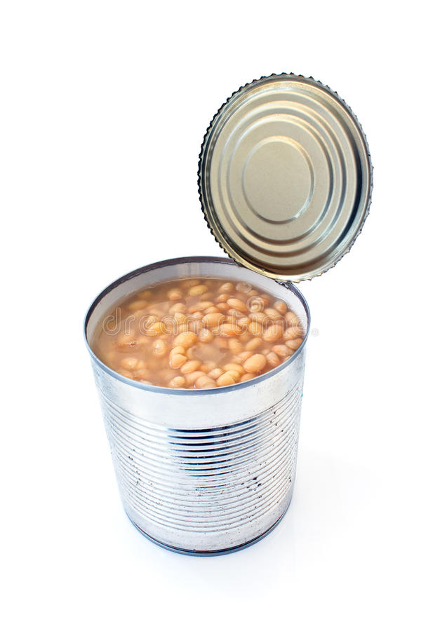

Beans

Description
Cheap and delicius beans.
Ingredients
- Can of beans.
- Anything to open the can.
Steps
-
Use anything to open the can, some people use a can opener, others try
to boil the beans to increase the inner preasure and make it explode.
The best option is to buy a can of beans with a pull-tab opening. After
you have opened the can you are ready to have a delicious meal.
Eat it directly from the can, like if it was a drink.
Return to menu